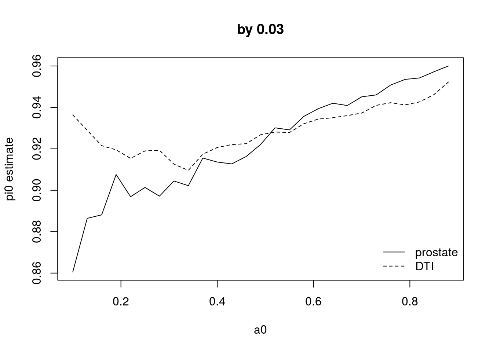
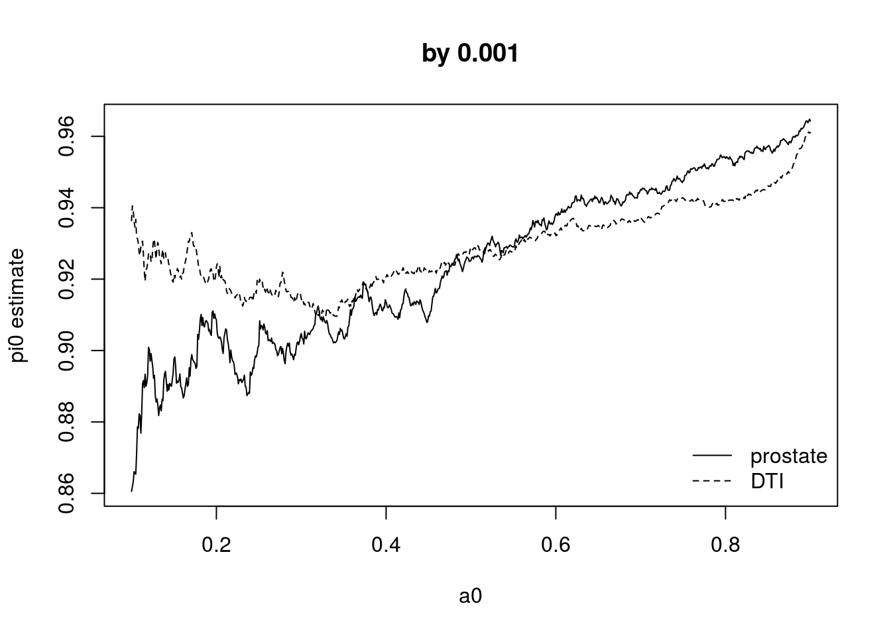
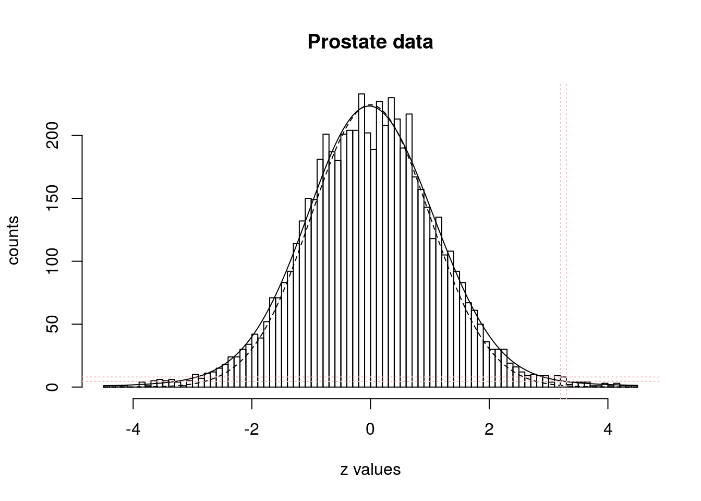
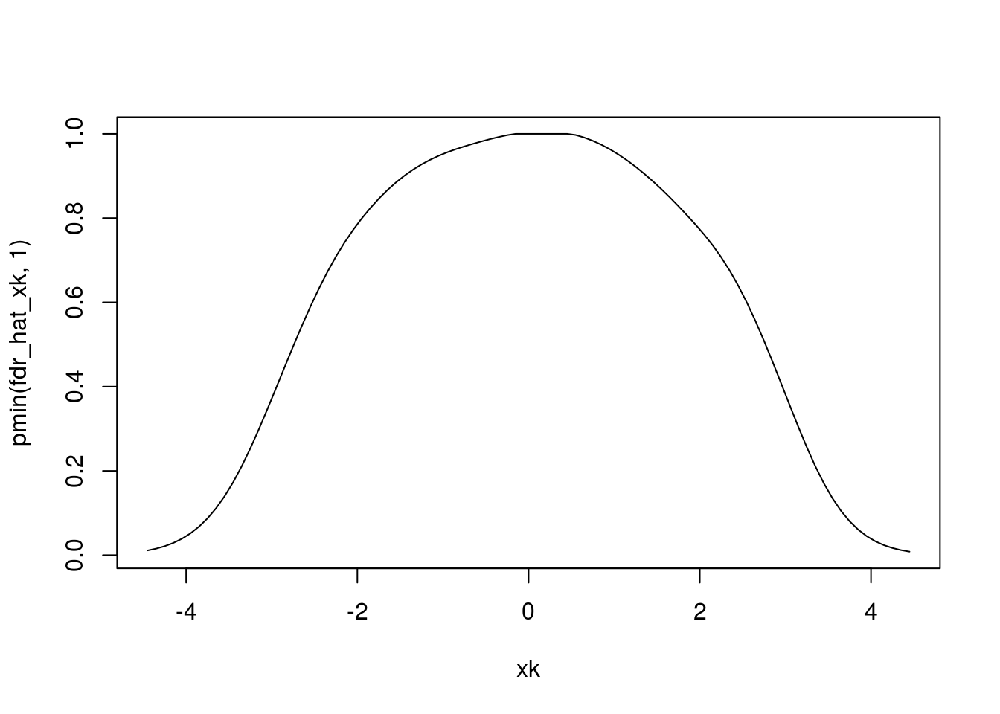

knitr::opts_knit$set(results = 'markup')The prostz.RData consists of 6,033 z-values from the prostate cancer data analysis example.
load(file.path("/Users/valeriewelty/Dropbox/Vandy/SEDS Lab Group/lsi", "prostz.RData"))
length(prostz)## [1] 6033prostz = prostz[which(abs(prostz) <= 4.5)]In this example, we take \(\mathscr{A}_0\) to be the central \(\alpha_0\) proportion of the \(f_0\) distribution as on page 60. Here we use \(\alpha_0 = 0.5\) and \(f_0\) is \(\mathscr{N}(0, 1)\) such that
\[\begin{align} \mathscr{A}_0 & = \left[ \Phi^{-1} (0.5 - \alpha_0/2), \Phi^{-1}(0.5+\alpha_0/2) \right] \\ & = \left[ \Phi^{-1} (0.5 - 0.5/2), \Phi^{-1}(0.5+0.5/2) \right] \\ & = \left[ \Phi^{-1} (0.25), \Phi^{-1}(0.75) \right] \\ & = \left[ -0.6745, 0.6745 \right] \end{align}\](a0 = 0.5)## [1] 0.5(A0 = qnorm(0.5 + c(-1, 1) * a0/2))## [1] -0.6744898 0.6744898We “believe” that \(f_1(z)\) is zero for this subset of the sample space, i.e. \(f_1(z) = 0\) for \(z \in \mathscr{A} = [ -0.6745, 0.6745 ]\). By this assumption, all non-null cases have \(z\)-values outside of \(\mathscr{A}_0\) (called the zero assumption). Recall \(N_+(\mathscr{A}_0)\) is the observed number of \(z_i\) values in \(\mathscr{A}_0\), and here is equal to 2,790.
length(which(prostz >= A0[1] & prostz <= A0[2]))## [1] 2790Recall that \(E[N_+(\mathscr{A}_0)] = \pi_0 \cdot N \cdot F_0(\mathscr{A}_0)\) (4.45), suggesting the estimator
\[\begin{align} \widehat{\pi}_0 & = N_+(\mathscr{A}_0)/(N \cdot F_0(\mathscr{A}_0)) \\ & = \frac{2,790}{6,033 \cdot F_0(\mathscr{A}_0)} \end{align}\]N = length(prostz)
N_plus_A0 = length(which(prostz >= A0[1] & prostz <= A0[2]))
(pi0 = N_plus_A0/(N * (pnorm(A0[2]) - pnorm(A0[1]))))## [1] 0.9252197For the DTI data set, \(N = 15,443\) and \(N_+(\mathscr{A}_0) = 7,165\) and therefore $_0 = $.
load(file.path("/Users/valeriewelty/Dropbox/Vandy/SEDS Lab Group/lsi", "DTIdata.Rda"))
DTIz = DTIdata[, 'z.value']
(N = length(DTIz))## [1] 15443(N_plus_A0 = length(which(DTIz >= A0[1] & DTIz <= A0[2])))## [1] 7165(pi0 = N_plus_A0/(N * (pnorm(A0[2]) - pnorm(A0[1]))))## [1] 0.9279285a0 = seq(0.1, 0.9, 0.03)
pi0_p = sapply(a0, function(a0) {
A0 = qnorm(0.5 + c(-1, 1) * a0/2)
N = length(prostz)
N_plus_A0 = length(which(prostz >= A0[1] & prostz <= A0[2]))
pi0 = N_plus_A0/(N * (pnorm(A0[2]) - pnorm(A0[1])))
return(pi0)
})
pi0_D = sapply(a0, function(a0) {
A0 = qnorm(0.5 + c(-1, 1) * a0/2)
N = length(DTIz)
N_plus_A0 = length(which(DTIz >= A0[1] & DTIz <= A0[2]))
pi0 = N_plus_A0/(N * (pnorm(A0[2]) - pnorm(A0[1])))
return(pi0)
})
plot(a0, pi0_p, type = 'l', main = 'by 0.03', ylab = 'pi0 estimate')
lines(a0, pi0_D, lty = 2)
legend('bottomright', c('prostate', 'DTI'), lty = c(1, 2), bty = 'n')
### finer detail
a0 = seq(0.1, 0.9, 0.001)
pi0_p = sapply(a0, function(a0) {
A0 = qnorm(0.5 + c(-1, 1) * a0/2)
N = length(prostz)
N_plus_A0 = length(which(prostz >= A0[1] & prostz <= A0[2]))
pi0 = N_plus_A0/(N * (pnorm(A0[2]) - pnorm(A0[1])))
return(pi0)
})
pi0_D = sapply(a0, function(a0) {
A0 = qnorm(0.5 + c(-1, 1) * a0/2)
N = length(DTIz)
N_plus_A0 = length(which(DTIz >= A0[1] & DTIz <= A0[2]))
pi0 = N_plus_A0/(N * (pnorm(A0[2]) - pnorm(A0[1])))
return(pi0)
})
plot(a0, pi0_p, type = 'l', main = 'by 0.001', ylab = 'pi0 estimate')
lines(a0, pi0_D, lty = 2)
legend('bottomright', c('prostate', 'DTI'), lty = c(1, 2), bty = 'n')
The example on page 78 for estimating \(\widehat{fdr}\) versus \(\bar{fdr}\) is indicated by the pink lines
N = 6033
# N = length(prostz)
N_plus_A0 = length(which(prostz >= A0[1] & prostz <= A0[2]))
# pi0 = N_plus_A0/(N * (pnorm(A0[2]) - pnorm(A0[1])))
pi0 = 0.932
z = seq(-4.5, 4.5, by=0.01)
K = 90
d = 0.1
J = 7
breaks = seq(-4.5, 4.5, d)
length(breaks)-1 == K## [1] TRUEh = hist(prostz, breaks=breaks, plot=F)
(scale = N*d)## [1] 603.3# Lindsey's method
Zk = h$breaks
yk = h$counts
xk = h$mids
# fit = glm(yk ~ poly(xk, J, raw=T), family="poisson")
fit = glm(yk ~ splines::ns(xk, df=J), family="poisson")
yhat_xk = predict(fit, newdata = data.frame(xk = xk), type = 'response')
yhat_z = predict(fit, newdata = data.frame(xk = z), type = 'response')
f0_xk = dnorm(xk, 0, 1)
f0_z = dnorm(z, 0, 1)
## Figure 5.1
plot(h, main='Prostate data', xlab='z values', ylab='counts')
# scaled estimate pi0*f0(z)
lines(z, scale*pi0*f0_z, lty=2)
# estimate for mixture using Lindsey's method
lines(z, yhat_z, lty=1)
abline(h = c(4.49, 8), col = 'lightpink', lty=3)
abline(v = c(3.2, 3.3), col = 'lightpink', lty=3)
Estimate local fdr with example bin \(k = 78\) (on page 78… wonder if that was a coincidence 🤔). Bin \(k=78\) corresponds to \(z \in [3.2, 3.3)\), and is observed to contain \(y_k = 8\) values.
The smooth estimate of the local fdr is
\[\begin{align} \widehat{fdr}(x_k) & = \frac{\widehat{\pi}_0 f_0(x_k)}{\widehat{f}(x_k)} \hskip 5mm \text{(5.5)} \\ & = \frac{\widehat{\pi}_0 f_0(x_k)}{\widehat{f}(x_k)} \cdot \frac{N \cdot d}{N \cdot d} \\ & = \frac{N \cdot \hat{\pi}_0 \cdot f_0(x_k) \cdot d}{N \cdot d \cdot \hat{f}(x_k)} \\ & \approx \frac{N \cdot \widehat{\pi}_0 \cdot [F_0(x_k + d/2) - F_0(x_k - d/2)]}{N \cdot d \cdot \widehat{f}(x_k)} \\ & = \frac{e_{0k}}{\widehat{y}_k} & = \frac{1.14}{4.49} \\ & = 0.254 \end{align}\]## Example p.78 - bin k = 78
# equation (5.20)
(e0k = N*pi0*dnorm(xk[78])*d)## [1] 1.140884(yhat_xk[78])## 78
## 4.453552(fdr_hat_78 = e0k/(yhat_xk[78]))## 78
## 0.256174## ways to calculate the null expected count:
N*pi0*(pnorm(xk[78]+d/2) - pnorm(xk[78]-d/2)); N*pi0*dnorm(xk[78])*d## [1] 1.145433## [1] 1.140884## Estimate local fdr [and tail area Fdr]
e0k = N*d*pi0*f0_xk
fdr_hat_xk = e0k/yhat_xk
fdr_bar_xk = e0k/yk
# Fdr = pi0*f0/(...)
## Figure 5.2
plot(xk, pmin(fdr_hat_xk, 1), lty=1, type='l') 
## Table 5.1
k = seq(76, 83)
knitr::kable(cbind(k, 'xk'=xk[k], 'e0k'=e0k[k], 'yk'=yk[k], 'fdr_bar'=fdr_bar_xk[k], 'y_hat'=yhat_xk[k], 'fdr_hat'=fdr_hat_xk[k]), row.names = F)| k | xk | e0k | yk | fdr_bar | y_hat | fdr_hat |
|---|---|---|---|---|---|---|
| 76 | 3.05 | 2.1421363 | 4 | 0.5355341 | 6.016149 | 0.3560644 |
| 77 | 3.15 | 1.5711433 | 9 | 0.1745715 | 5.150022 | 0.3050751 |
| 78 | 3.25 | 1.1408842 | 8 | 0.1426105 | 4.453552 | 0.2561740 |
| 79 | 3.35 | 0.8202087 | 2 | 0.4101044 | 3.890393 | 0.2108293 |
| 80 | 3.45 | 0.5838002 | 4 | 0.1459501 | 3.430106 | 0.1701989 |
| 81 | 3.55 | 0.4113971 | 4 | 0.1028493 | 3.049880 | 0.1348896 |
| 82 | 3.65 | 0.2870220 | 4 | 0.0717555 | 2.732455 | 0.1050418 |
| 83 | 3.75 | 0.1982559 | 1 | 0.1982559 | 2.464633 | 0.0804404 |
locfdr replaces the polynomial exponent with a natural spline basis